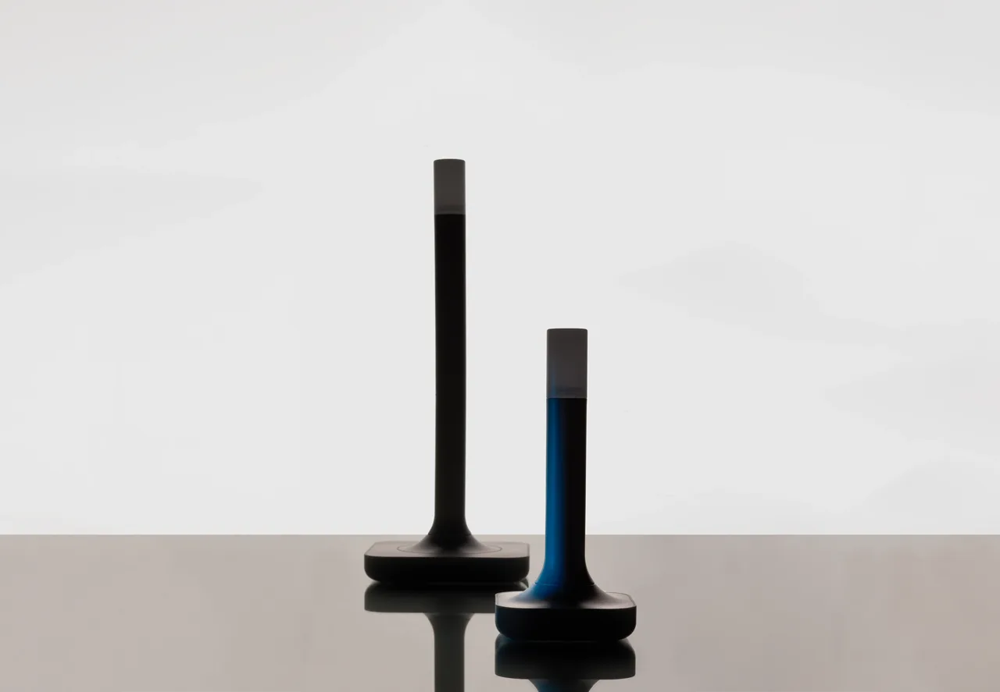

Device · Zigbee & Thread
Home Assistant Connect ZBT-2: the spec, the setup, and what it replaces
The Home Assistant Connect ZBT-2 is a USB radio adapter made by Nabu Casa, the company that employs most of Home Assistant's core developers. It is positioned as the easiest way to start with Zigbee or Thread — including Matter devices that talk over Thread — and it replaces the Connect ZBT-1, sold from 2022 as SkyConnect, which the product page now lists as discontinued.
The short answer to the query behind this page: if you need a radio for a Home Assistant box and you do not already own one, the ZBT-2 is the sensible default. Home Assistant's own ZHA documentation says so in as many words — "If you do not have a coordinator yet, the Home Assistant Connect ZBT-2 is the recommended choice" (ZHA docs). If you already run a working ZBT-1 with a mesh you are happy with, the case for upgrading is convenience, not necessity. And if you assumed one stick would give you Zigbee and Thread at once, it will not.

What is inside
Two chips, doing two different jobs. A Silicon Labs MG24 handles the 2.4 GHz radio for Zigbee 3.0 and Thread. An ESP32-S3 sits alongside it as the USB-serial bridge, the part that presents the radio to the host as a serial port (Home Assistant product page). Splitting those roles is what makes the next number possible.
The serial link runs at 460,800 baud. On the ZBT-1 it was 115,200, over an MG21 radio and a CP2102N USB chip. Nabu Casa describes the change as a four-times improvement in adapter speed and credits it with better device responsiveness. Baud rate is not a marketing abstraction here: it is the ceiling on how fast the stick can hand messages to Home Assistant, and it is the clearest generational difference between the two products.
The spec sheet
| Spec | Connect ZBT-2 |
|---|---|
| Radio SoC | Silicon Labs MG24 (Zigbee 3.0 / Thread) |
| USB bridge | ESP32-S3 |
| Serial speed | 460,800 baud (ZBT-1: 115,200) |
| Frequency | 2400–2483.5 MHz |
| Transmit power | 10 dBm (Europe), 8 dBm (rest of world) |
| Antenna | External, 24 mm diameter × 164 mm, on a base; 4.16 dBi peak gain, omnidirectional |
| Power and data | USB-C, 5 V DC, 500 mA |
| In the box | Antenna and base, 1.5 m USB-C cable (USB 2.0/3.0), quickstart, warranty and safety notes |
| Size and weight | 83 × 83 × 179 mm, 157 g |
| Enclosure | Polycarbonate, white and semi-transparent |
| Environment | Indoor use only, 0–65 °C (antenna −40 to +85 °C), non-condensing |
All figures in that table come from the product page. Note the two transmit figures: 10 dBm in Europe, 8 dBm elsewhere, which is a regulatory difference rather than a model difference.
The antenna is the part people underestimate. It is not a stub on the PCB; it is a 164 mm external whip on a stand, and the enclosure is 179 mm tall to hold it. That means the ZBT-2 wants a little physical room — a USB port on the back of a shelf-mounted mini PC is fine, a port buried against a metal case is not. It also means the adapter is heavier than a dongle at 157 g, so a loose USB extension cable will sag.
One radio, one protocol
This is the single most misunderstood thing about the ZBT-2, and Nabu Casa is unusually direct about it: the adapter does not do Zigbee and Thread at the same time.
The company tried the alternative. It tested multiprotocol operation — the MultiPAN arrangement that shares one radio between Zigbee and Thread — on the ZBT-1, found it inconsistent, found it damaged stability, says it does not plan to implement it on the ZBT-2, and recommends one dedicated adapter per protocol (product page). That is a rare thing in this market: a vendor telling you to buy two of its product rather than pretending one will do.
Practically, you decide per stick. A Zigbee house gets a Zigbee adapter. A Matter-over-Thread house gets a Thread adapter. A house with both — which is most houses two years from now — gets two adapters, or one adapter plus a border router it already owns, such as a HomePod or a Nest Hub. If you are still choosing a mesh radio at all, Zigbee vs Thread lays out the trade; if you already know you want Thread, what a Thread network actually is is the background.
Using it for Thread (the Matter path)
Thread is the radio layer under Matter-over-Thread devices: locks, sensors, some lights. Those devices do not talk to your phone or your server directly. They talk to a Thread border router, which bridges the mesh onto your IP network.
Home Assistant can be that border router. The Thread integration does two jobs: it stores Thread network credentials, and it tracks the networks it can see. It appears on its own when Home Assistant detects a border router — there is nothing to install from the app store first, and no YAML.
To turn a ZBT-2 into a border router, you add the adapter and flash it with OpenThread RCP firmware through the OpenThread Border Router app. The documentation covers both starting cases separately: making Home Assistant the first Thread network in the house, and adding a Home Assistant border router alongside a network that already exists — the common situation when an Apple TV or a Google speaker got there first. There is also a dedicated section on migrating a Thread network to a new adapter, which is the section you want when swapping a ZBT-1 for a ZBT-2 (Thread integration docs).
One piece of vocabulary saves confusion. The Thread Group's "Built on Thread: requires border router" logo means Thread is the only radio in that device — it has no Wi-Fi fallback. A device wearing that logo is not broken when it refuses to pair; it is waiting for a border router that is reachable and shares its credentials.
Using it for Zigbee
Zigbee needs a coordinator: exactly one per network. ZHA is hardware-independent, needs one adapter plugged into the machine running Home Assistant, and does the rest from the UI. Coverage and capacity do not come from the coordinator — they come from mains-powered routers, the plugs and bulbs that stay energised and pass messages along (ZHA docs).
The order that works: pair mains-powered devices first, spread through the house, then battery sensors near them. Do it the other way round and you will spend an evening wondering why a motion sensor two rooms away keeps dropping.
Zigbee2MQTT is a supported path too. Nabu Casa's FAQ says many people run the ZBT-2 with Z2M "and are seeing great results", and points at Zigbee2MQTT's own adapter-migration documentation. If you are weighing the two stacks, the Zigbee hub guide covers coordinator choices and what each integration asks of you; the short version is that ZHA is the built-in path and Z2M is the one with more knobs.
Migrating an existing network
You do not have to re-pair everything. Home Assistant ships migration wizards for both Zigbee and Thread, and the product page states they cover "the vast majority of adapters". The exception worth knowing: some sticks need specific firmware before they can hand over their network — ConBee is the example the page gives.
Two rules make a migration survivable. Back up first, because a coordinator swap rewrites the network key material. And do not run the old and new coordinator at the same time; a Zigbee network with two coordinators on one channel is a network that argues with itself.
Gotchas before you order
- No PoE. Nabu Casa says Power over Ethernet did not fit the design goals of simplicity and peak performance, and that it remains under exploration. There is no Ethernet port. If your server is in a basement and your radios need to be upstairs, plan for a USB extension, not a network cable.
- Indoors only. The rating is 0–65 °C, non-condensing, indoor use. A garage in the tropics is a maybe; a shed is a no. The antenna itself is rated wider, −40 to +85 °C, but the electronics are not.
- One protocol per stick. Covered above, and worth repeating because it is the mistake people make on day one.
- The case opens on purpose. There are no clips and no glue, and the board exposes pins and pads for flashing. That is a design decision, not a manufacturing shortcut: it means the radio can be reflashed with other firmware later without destroying the enclosure.
- USB 2.0 cable in the box, USB 3.0 ports on your server. The included cable is rated for both. Keep the adapter on an extension lead rather than directly in a crowded hub — USB 3 radios and 2.4 GHz antennas are famously bad neighbours, and the ZBT-2's antenna is the reason it can sit away from the case.
What else is out there
Readers ask about the Sonoff coordinators — the ZBDongle-E and the Dongle Max — in the same breath as the ZBT-2, and they are a legitimate alternative family: cheaper, widely used, and supported by both ZHA and Zigbee2MQTT. We are not going to quote their specifications here. Sonoff's product pages returned 404 during this pass, and a spec table copied from memory is worse than no table at all. What holds regardless: the firmware build decides whether a given stick acts as a coordinator or a router, support differs by model and by firmware generation, and the authoritative lists are ZHA's tested-adapter table and Zigbee2MQTT's supported-adapters page. Check the model against those before you buy, not after.
What the official adapter buys you is not better radio physics. It is that Nabu Casa maintains the firmware for the ZHA team and can push updates from inside Home Assistant, and that a migration wizard exists for the product you are holding. You are paying for the boring part working.
Should you buy one
Buy if you are starting a Zigbee network on Home Assistant and own no coordinator, or if you want Home Assistant to be a Thread border router rather than borrowing Apple's or Google's. One adapter per protocol, so budget for two if you want both.
Wait if you are running a ZBT-1 that works. The four-times serial speed is real but it is a responsiveness improvement, not a new capability, and a coordinator swap on a large mesh costs an evening. Move when you are already touching the network, or when the ZBT-1's discontinuation makes replacement firmware a question.
Look elsewhere if you need PoE, run the radio outdoors, or want a coordinator that lives on Ethernet and never touches the server's USB bus. That is a different product class and the ZBT-2 is deliberately not in it.
Current price and stock sit on the listing, not here: Home Assistant Connect ZBT-2 on Amazon.
FAQ
What is the Home Assistant Connect ZBT-2 and what does it replace?
It is Nabu Casa's USB radio adapter for Home Assistant, covering Zigbee 3.0 and Thread. It replaces the Connect ZBT-1, previously sold as SkyConnect, which the product page now lists as discontinued.
Can the ZBT-2 run Zigbee and Thread at the same time?
No. Nabu Casa tested multiprotocol operation on the ZBT-1, found it inconsistent and damaging to stability, says it does not plan to implement it, and recommends one dedicated adapter per protocol.
Is the ZBT-2 a good Zigbee coordinator, and does it work with Zigbee2MQTT?
Home Assistant's ZHA documentation names the Connect ZBT-2 as the recommended choice if you do not have a coordinator yet. Nabu Casa's product FAQ says many people run it with Zigbee2MQTT and points to Zigbee2MQTT's adapter-migration documentation.
How do I migrate an existing Zigbee network to a ZBT-2?
Home Assistant ships a migration wizard for Zigbee and for Thread, and the product page says it covers the vast majority of adapters. Some sticks, ConBee among them, need specific firmware installed first.
Do I need the ZBT-2 for Matter, or only for Thread devices?
Only for Thread. Matter controllers talk to Thread devices through a Thread border router, so if your Thread devices already reach a border router you own, the ZBT-2 is not required. It is one way to give Home Assistant its own border router.
How does the ZBT-2 compare with a Sonoff ZBDongle-E or Dongle Max?
We could not verify current Sonoff specifications during this pass, so we do not quote them. The general rule stands: firmware build decides whether an adapter acts as a coordinator or a router, and ZHA and Zigbee2MQTT support varies by model, so check their adapter lists before buying.
Does the ZBT-2 support Power over Ethernet?
No. Nabu Casa says PoE did not fit the product's design goals for simplicity and peak performance, and that it remains under exploration. The ZBT-2 is USB-C, 5 V DC at 500 mA, with a 1.5 m USB-C cable in the box.
We publish a daily brief on Home Assistant, Zigbee and Matter releases. Read the latest.
- Primary sources
- Home Assistant Connect ZBT-2; Home Assistant Thread integration; Home Assistant ZHA integration
As an Amazon Associate, HA News earns from qualifying purchases.